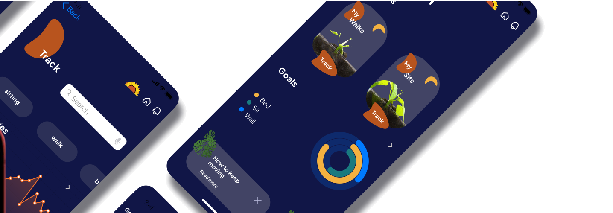
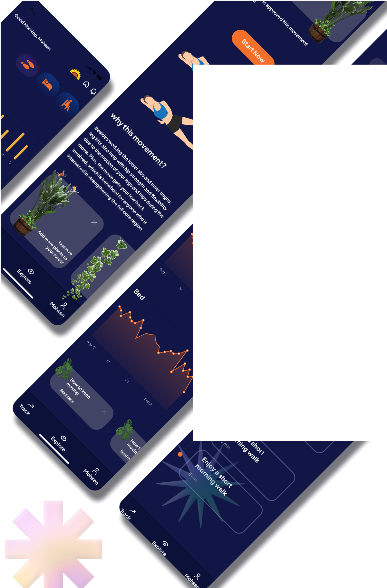
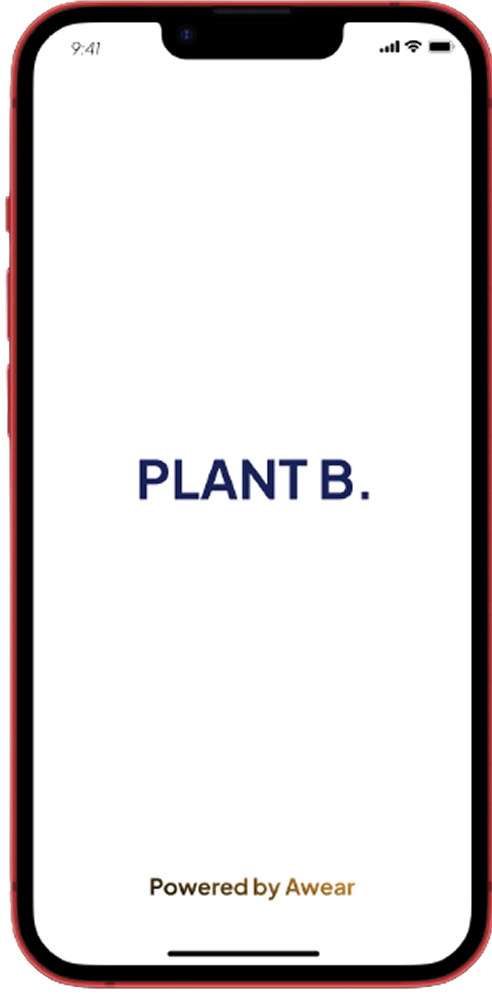
Plant B
Problem solvedFor years, the health of patients and hospital expenditures have suffered due to a lack of adherence among hospitalized patients when it comes to following their prescribed exercise regimens. This thesis explores the potential of utilizing motion sensors to enhance adherence rates.
View prototype ↗A human-centered design cycle, and the behaviour model behind it
Four repeating stages — analysis, design, evaluation, implementation — structured the thesis, applying the Capability–Motivation–Opportunity model to understand why patients weren't moving.
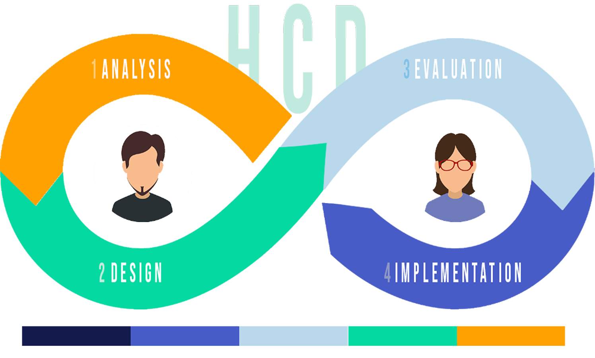
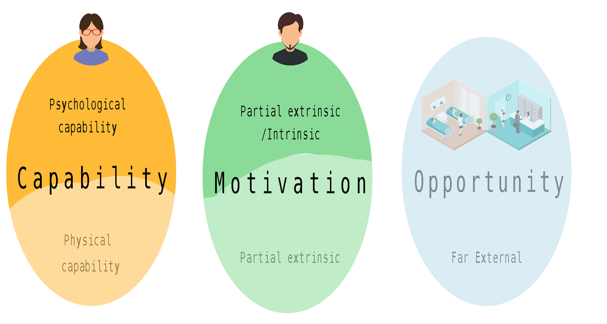
An empathy map, and meeting Sarah
Mapping what a hospitalized patient says, thinks, does and feels surfaced a consistent pattern: capable of moving, but unmotivated and unsure it was allowed.
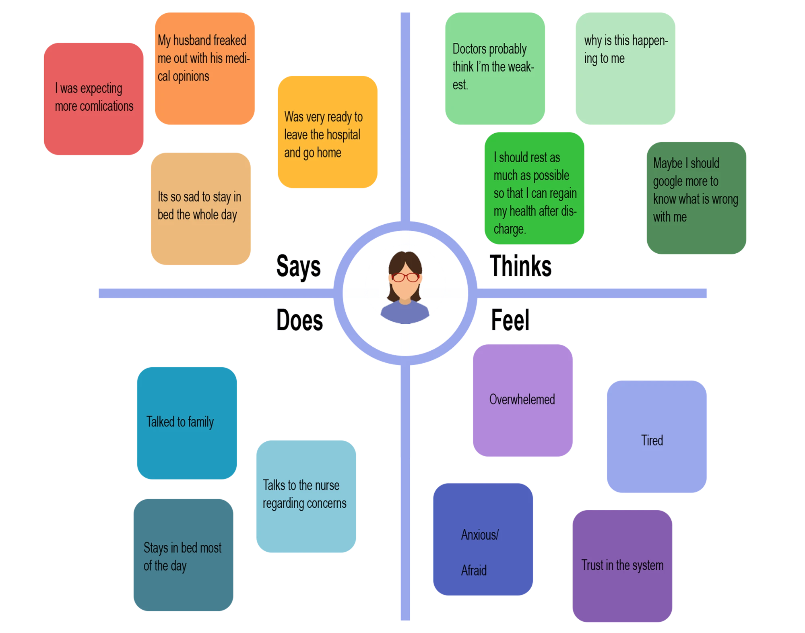
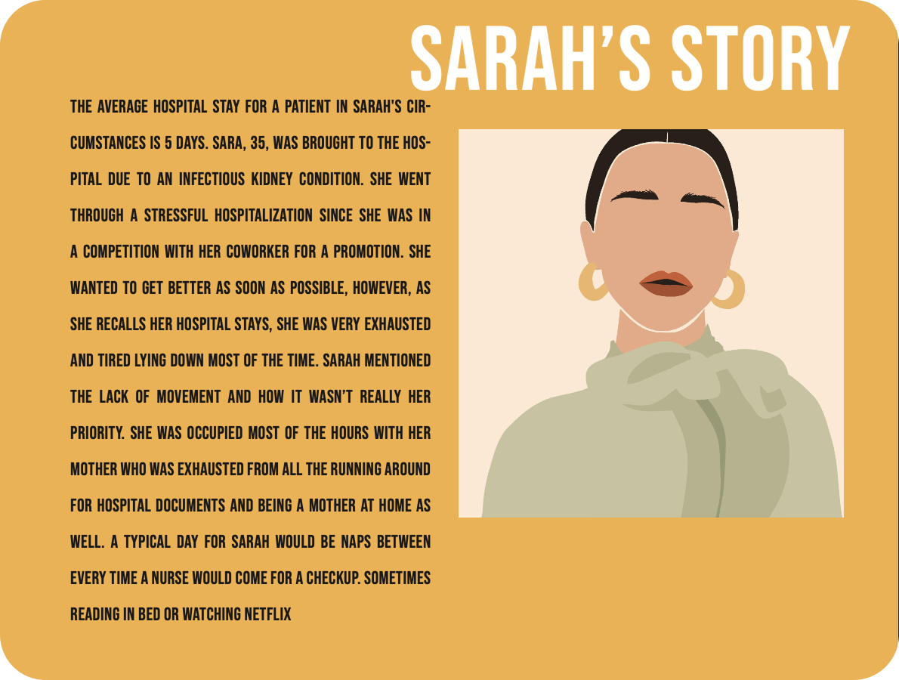
The typical hospital stay for a patient with Sarah's condition lasts about 5 days. Sarah, a 35-year-old, was admitted to the hospital due to an infectious kidney condition. Her hospital stay was exceptionally stressful since she was actively competing for a promotion at work and was eager to recover quickly and return to her job.
Reflecting on her time in the hospital, Sarah mentioned that although the doctor had recommended some physical activity during her stay, she seldom left her bed. Most of her hours were consumed by working on her laptop, watching Netflix, or attending to her emails. While she was frequently visited by her mother, they found themselves primarily confined to her hospital room, engaged in conversation — her mother was juggling hospital documentation and her own responsibilities at home, which limited their options for spending time elsewhere.
Small, doctor-approved movements, worked into the day
Beyond the daily walk prompts: progress against doctor-prescribed goals, a simple patient profile, and a short onboarding that sets expectations before day one.
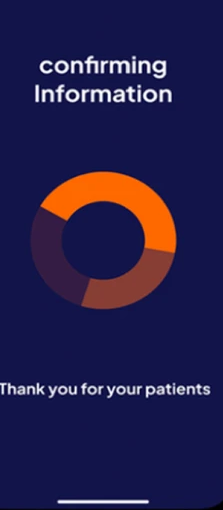
Loading
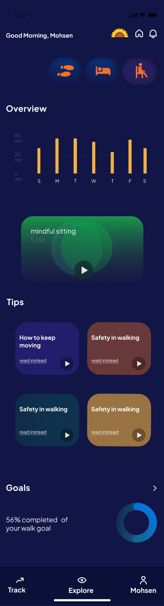
Home page
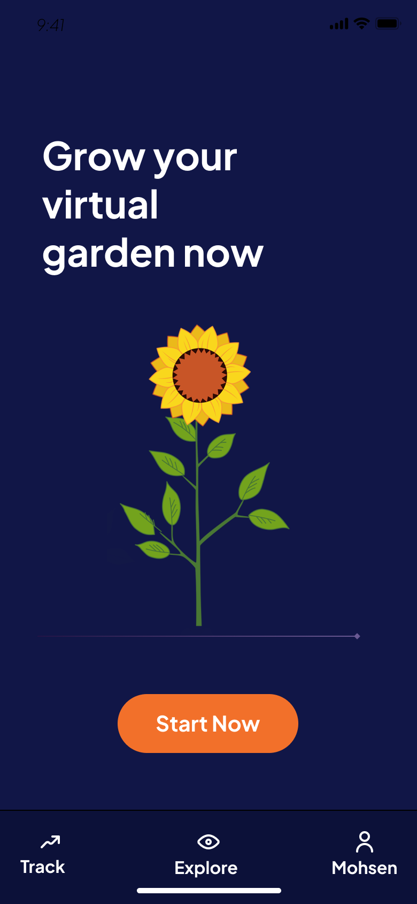
My forest
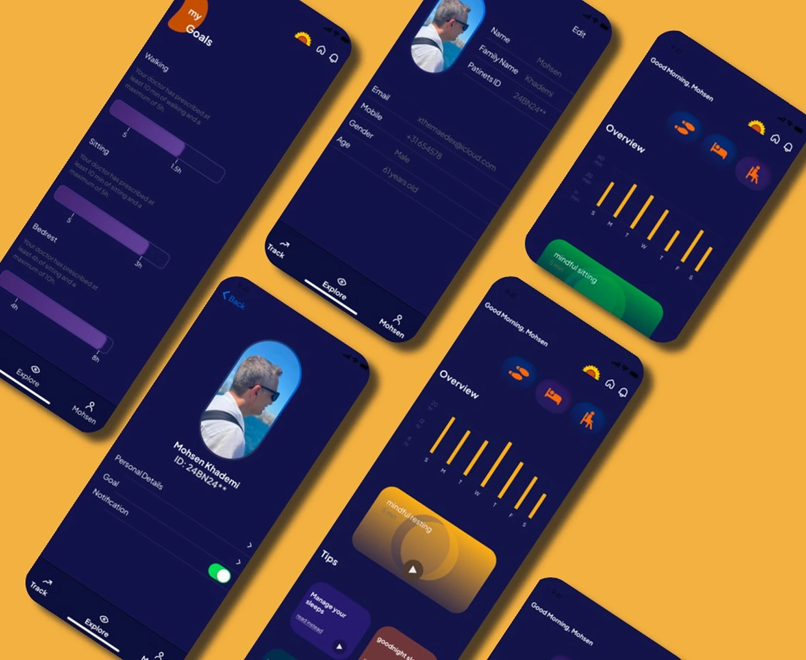
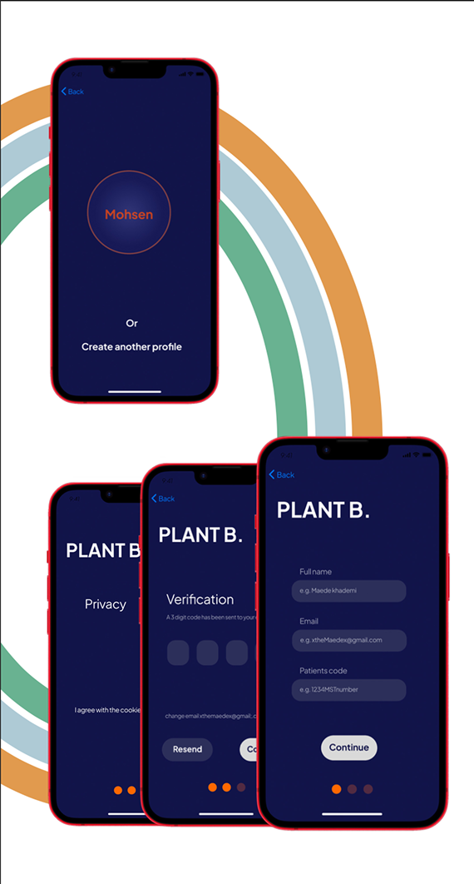
The rest of the app, in motion
Dashboard, activity tracking, the virtual-garden reward loop, and the goal settings behind it.
Dashboard
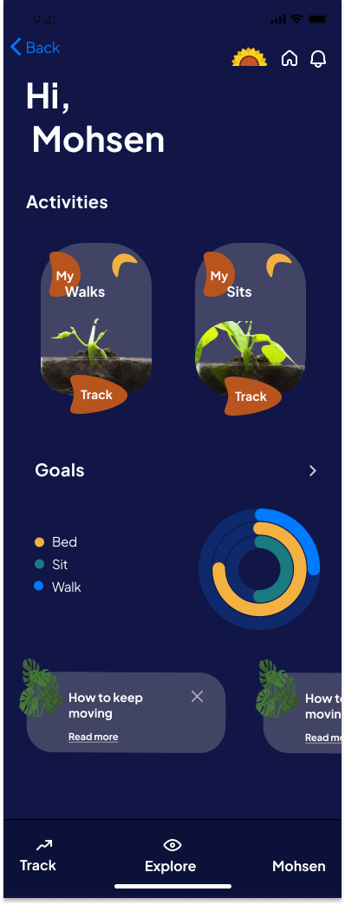
Activities
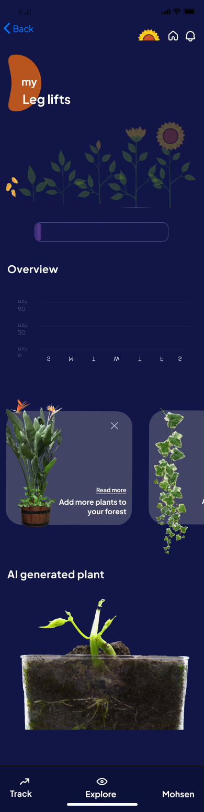
Leg lifts
Virtual garden
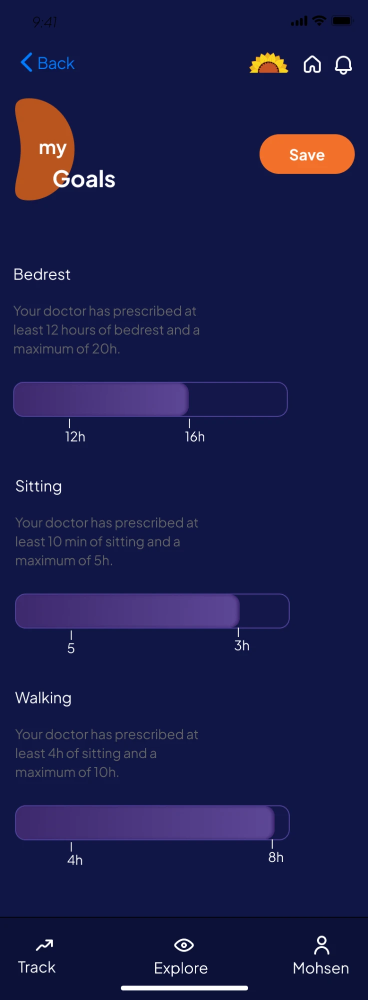
Goal settings